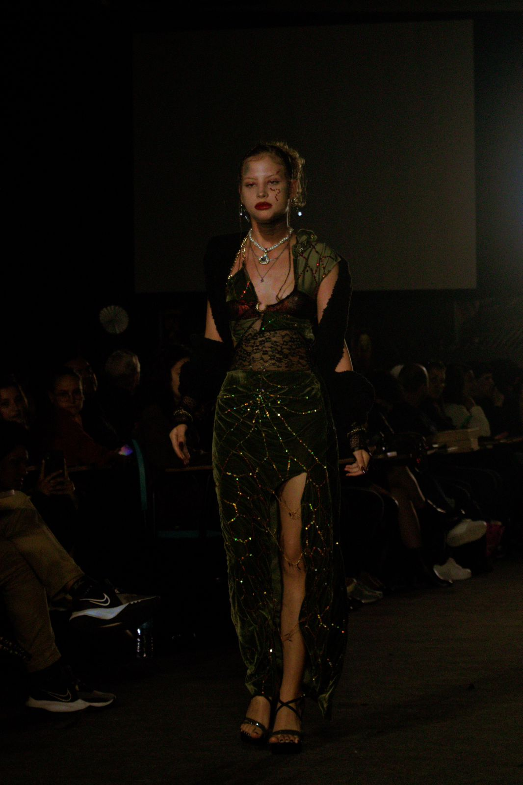
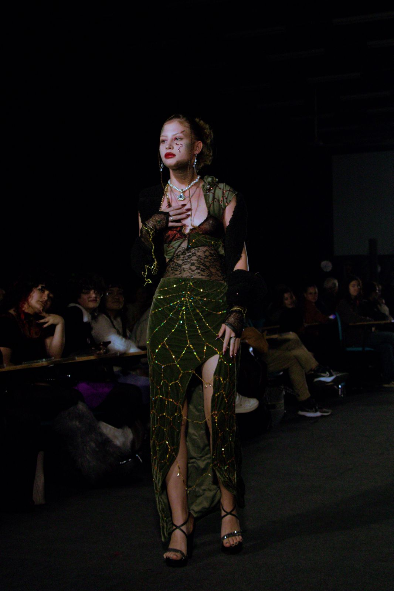
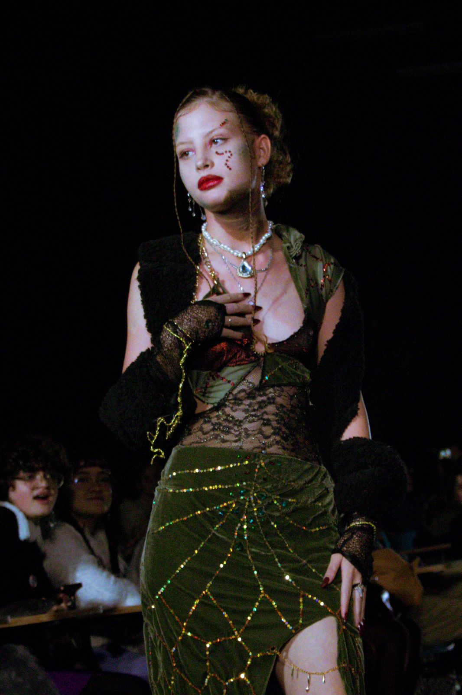
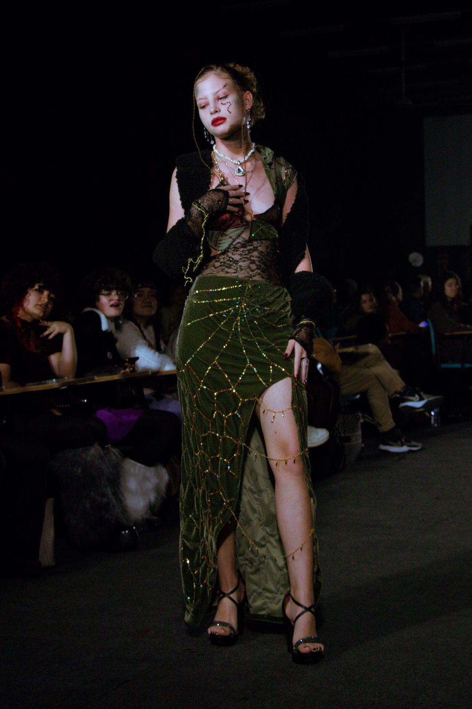
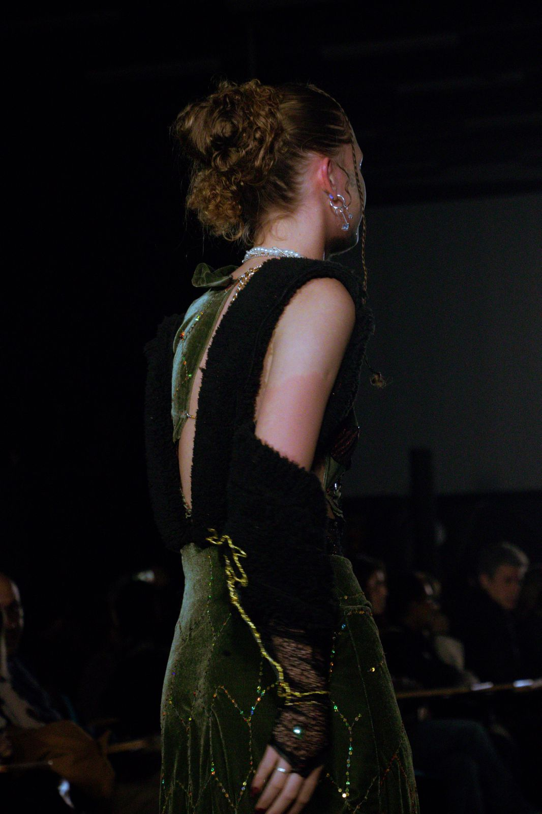
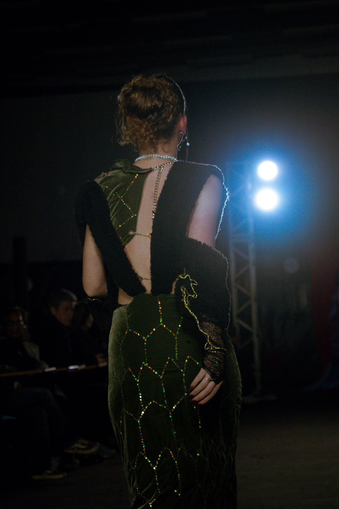
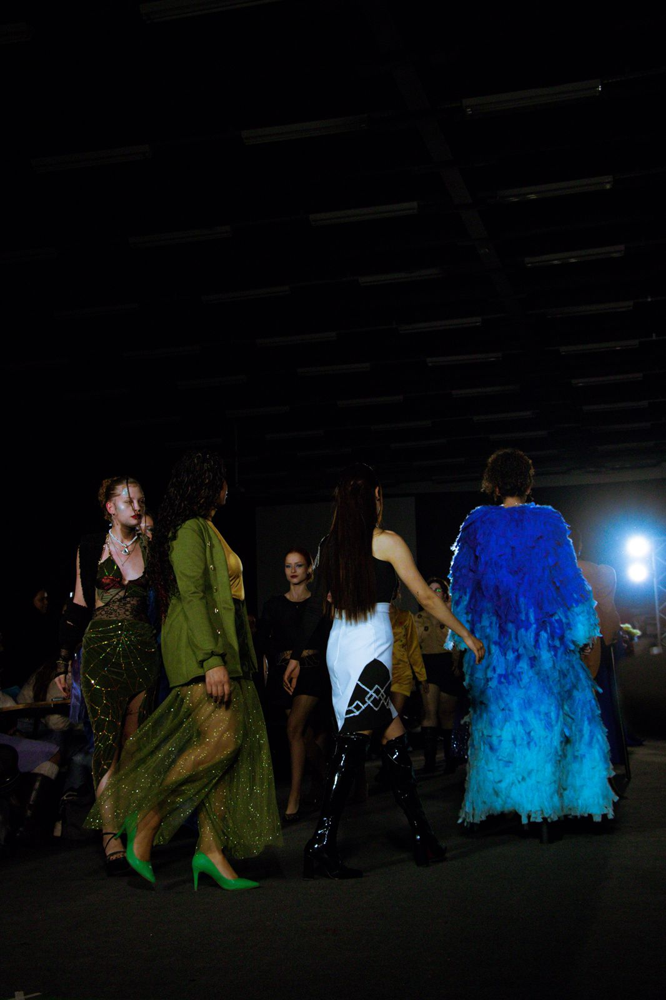
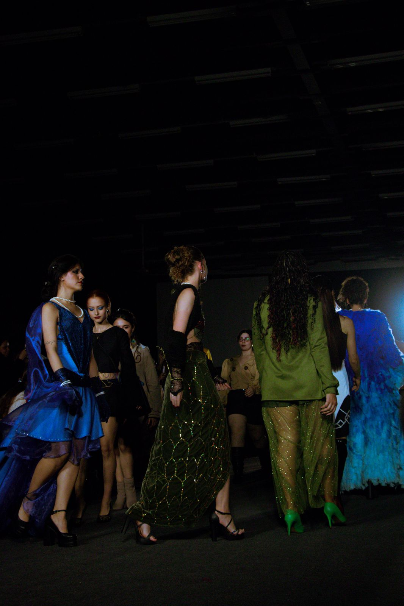

Projeto Design de Moda 2025
Este vestido é resultado de um projeto que une design, cultura e resistência. Inspirado na lenda amazônica da Boiúna (Cobra Grande), a peça traduz a força de um mito que representa proteção, transformação e ancestralidade. A estética do Art Déco foi o ponto de partida para construir formas geométricas e linhas marcantes. Mas foi a decolonialidade que guiou o olhar: transformar uma linguagem historicamente eurocêntrica em um manifesto visual que valoriza as narrativas indígenas brasileiras e histórias que muitas vezes são esquecidas. Cada etapa - da pesquisa ao acabamento - foi pensada para que o vestido carregasse mais que estética: ele carrega propósito, identidade e questionamento. Os detalhes manuais, os bordados e as texturas foram aplicados com o objetivo de dar vida a essa narrativa de força e memória.
       